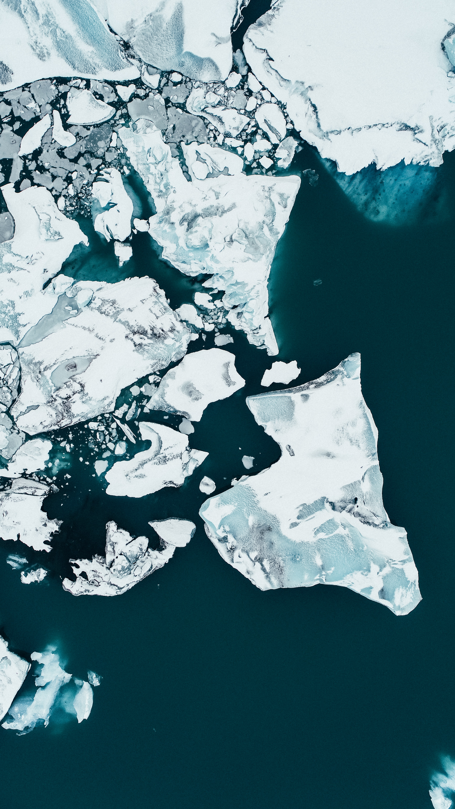
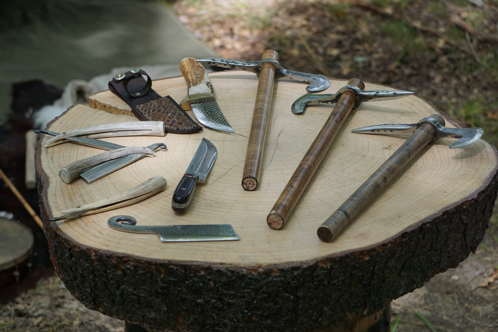
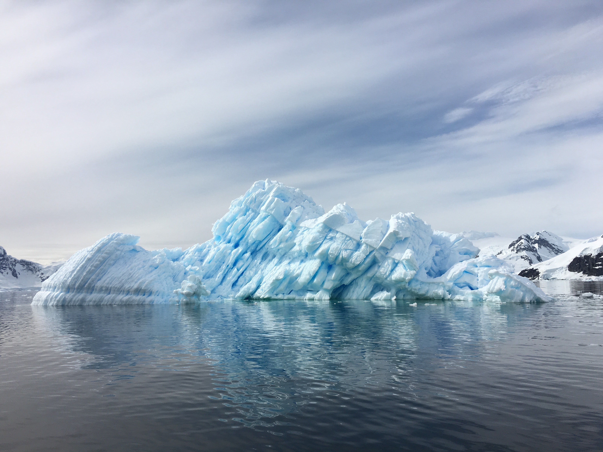

The world’s melting glaciers are yielding up their secrets too quickly
FORCLE GLACIER, Switzerland — At about 8,000 feet above sea level, Switzerland’s Forcle Glacier has for thousands of years been deeply ensconced in a frigid mountain valley overlooked by some of Europe’s highest peaks.
glaciers | Source: shawnanggg on Unsplash
To early human hunters who climbed these heights, it must have seemed as if its snow-covered body of ice would forever keep the valley locked in its frozen grip. Whatever was lost on these rocks — iron spears, leather shoes or rudimentary straps — was swallowed by the ice, never to reappear.
But when the Swiss archaeologist Romain Andenmatten arrived here on a recent September day, the ground was so muddy and moist that his shoes sank deep into it. On the ground in front of him lay a leather strap, rimmed with gleaming ice crystals, its holes filled with fine gravel.
The last time a human held it may have been over 1,000 years ago.
A hike through the ice caves of Austria’s melting glaciers shows climate change.
As climate change melts glaciers at unprecedented speeds, such ancient artifacts are emerging from the shrinking layers of ice around the world. For archaeologists, this is both a once-in-a-lifetime opportunity and a daunting task as the planet’s rapid warming is exposing objects faster than they can be saved.
When the artifacts emerge from the ice after decades or centuries, many are so well preserved that they seem to have been frozen just hours earlier. European researchers recently grew plants from 100-year-old seeds that had been discovered “frozen in time” in a World War I-era bunker on the Swiss-Italian border. Some of the most scientifically valuable finds are organic, such as wood and leather, which would normally decompose without the ice.
But because of the speed at which the earth’s glaciers are melting — temperatures are rising two times as fast in the Alps as elsewhere — researchers worry that they do not have enough time. Large portions of the collective history of about a third of the world’s population in mountain areas are “melting away,” said archaeologist Marcel Cornelissen.
The emergence of an object from the ice triggers a race to preserve it before it decomposes. “The mountains are starting to move,” said Regula Gubler, a Swiss archaeologist.
A ‘hurricane’ of melting
The sound of a rockfall echoed through the valley of the Forcle Glacier as Andenmatten and a colleague, archaeology student Tristan Allegro, 25, slowly trekked across ice covered by a thin layer of dark dust, rocks and soil.
The only other sound in these heights was the hum of commercial jets that left their white contrails in the cloudless skies.
“This glacier once cut through the entire valley,” Andenmatten said, pointing at a barren and ice-free basin in front of him. But within the next 10 or 20 years, the whole Forcle Glacier could be gone.
Swiss glaciers are melting rapidly
Located at around 2,500 meters above the sea level, the Forcle Glacier will disappear sooner than some of its higher-altitude equivalents.
This year alone, Swiss glaciers lost 6 percent of their ice, said glaciologist Matthias Huss, who likens the destructive force of this summer’s heat waves to an Alpine “hurricane.”
Glaciers in Europe are experiencing the most severe melting on record
“We’ve seen an increase in frequency of years with very strong melting over the last decades,” he said. “But what we’ve seen this summer is really completely different from all these previous extreme years.”
This year’s ice loss is so far above historical averages that, in theory, it should have been “virtually impossible.”
The additional melting may have prevented some of Europe’s mighty rivers from drying out during the cascade of heat waves this year. But once a critical threshold of melting has been crossed in the future, the lack of glacier water will be felt across the continent.
The ice is “a dead man walking,” said Lars Holger Pilo, an archaeologist in Norway.
Treasures of the ice

Source: NASA
A retreat of glaciers isn’t necessarily unnatural. They have always grown during extremely cold periods and shrunk when those cold stretches ended. Some natural melting was expected in Europe after the last “Little Ice Age” ended in the 19th century.
But as carbon dioxide emissions surged over the past century, human factors began to quicken what had been expected to be a gradual natural retreat — and turned ice patches and glaciers into sites of archaeological and sometimes criminal investigations.
As the melting was speeding up in the early 1990s, early spectacular discoveries awakened the interest of researchers.
Late in summer 1991, two German hikers on the Italian-Austrian border found the frozen body of a man who was initially assumed to be the victim of a recent accident. He later became known as Ötzi, or “Iceman” — a 5,000-year-old murder victim who had been killed with an arrow and preserved in the ice.
Over the following decades, Ötzi became perhaps the most carefully investigated body in history, allowing researchers to draw conclusions about historical climates, early human habits and genetics.
The more the ice melts, the deeper archaeologists advance into some of its oldest layers — and into the past.
“The finds have definitely gotten older,” said Pilo, the researcher in Norway, who has been coming across artifacts that radiocarbon dating shows are thousands of years old.
Among the finds have been a Swiss leather shoe over 3,500 years old and a 10,000-year-old Alpine glacier mine where hunters once extracted rock crystals to make arrowheads and other kinds of blades. In Norway, a 1,300-year-old ski that predates the Vikings was so well preserved that scientists were able to reproduce a functioning copy and race down the slopes with it.
About half of all global ice discoveries that are medieval or older have been made in Norway, which has a particularly high accumulation of ice that does not move. Archaeologists prefer searching for artifacts in such deposits because — unlike in glaciers — the lack of movement prevents the items from being ground up and “spat out,” said Gubler, the Swiss scientist. In the Swiss Alps, the most promising areas of discovery are the ice patches and snowfields around the glaciers, not the glaciers themselves.
The discoveries so far may be only a glimpse into what could be found. Pilo and his colleagues in Norway’s Innlandet county have a list of about 150 potential sites that they have not yet been able to examine.
Artifacts | Source: Chris Chow on Unsplash
For Pilo and many of his colleagues, the challenge is no longer identifying sites where discoveries are likely but prioritizing those that are most important for salvaging.
“For every patch we find, there are probably dozens that go unnoticed and quietly melt away — and the cultural heritage embedded in them is out there under the August sun, rotting,” said Nicholas Jarman, an archaeologist for the U.S. National Park Service in New Mexico who uses much of his annual leave to hunt for artifacts in glaciers.
“It’s a small reflection of the broader societal challenge that we’re faced with,” he said. “Will I be looking back in 20 years, wishing that I’d done more?”
‘I wonder if we’re too late’
In Switzerland, Andenmatten and his colleague hope that crowdsourcing can help them rise to the challenge.
They released a smartphone app last year that lets anyone share photos and the GPS coordinates of potential finds. It allows the scientists to make a first assessment of the significance of a discovery before they embark on a sometimes days-long hike.
Allegro, the archaeology student, had used the app to alert the regional archaeology authority when he made the first discoveries on the Forcle glacier this year. The office asked him to join the search team.
Glaciers | Source: Cassie Matias on Unsplash
As the sun rose behind the mountains, he and Andenmatten put on UV face masks and hats to shield themselves from the burning rays of the sun. By the time they had shrugged off their coats, the glacier streamlet that was still covered by a thin layer of ice in the morning had turned into a bubbling stream of melting water.
Equipped with a GPS receiver and a hammer, the two researchers scanned their surroundings, looking for anything that appeared out of place.
They didn’t have to search for long. Within a few hours, their black plastic bags were filled with dozens of items of crafted wood and the leather strap.
Every time they decided it was time to begin their descent, the scientists stumbled upon a new artifact.
The finds in this part of Switzerland over the years have included carved wooden statues that probably date back over 2,500 years to the Iron Age, a pistol and clothes that may have belonged to a 16th-century mercenary, and a 3,500-year-old pair of leather shoes.
"Like you’re witnessing the end of something"
But the influx of artifacts could come to an abrupt end one day.
Swiss researcher Gubler has hiked up to the Schnidejoch, a mountain pass about 9,000 feet above the sea level, almost every year for the past decade and says it used to be an archaeological treasure chest.
But when Gubler returned this summer, she found that all the ice had disappeared.
“It all happened very fast,” she said.
Above data published by Madhumitha Jaganmohan
Some researchers are noticing a marked decline in the number of discoveries, at least in some areas, as ice fields start to disappear.
“I wonder if we’re too late,” archaeologist Cornelissen said.

Sunset over glaciers | Source: Gerald Berliner on Unsplash
Working in such proximity to some of the most visible effects of climate change can be disheartening, researchers say.
Jarman, the New Mexico-based researcher, says that when he is in the field, focusing on the task at hand is easy. Because only a few weeks or even days every year offer weather suitable for exploration, being in the field leaves little time for reflection.
The more difficult moments tend to be the ones at home, when the archaeological “exhilaration and excitement is tempered with this sober awareness,” Jarman said. “Like you’re witnessing the end of something.”